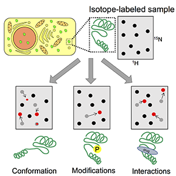
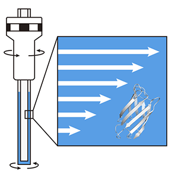
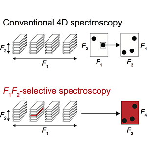
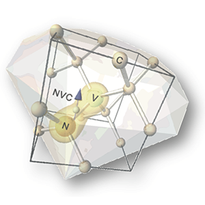
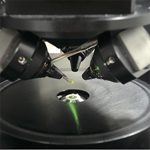
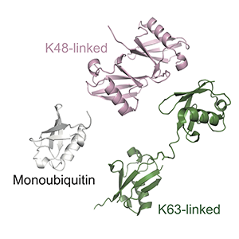
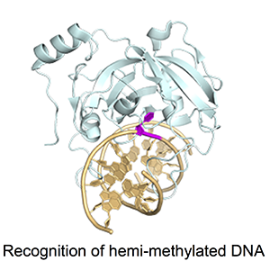

タンパク質の挙動をより深く理解するために、新しい核磁気共鳴法（NMR法）を開発しています。
We are developing new NMR methodologies to elucidate molecular behavior of proteins at atomic resolution.
In-cell NMR Spectroscopy

我々は、生きたヒト細胞内におけるタンパク質の構造や働きを観察することの出来るin-cell NMR法を開発しました。
最近は、本手法を用いて、細胞内のタンパク質の安定性をはじめとする様々な物理パラメータを解析しています。
We have established "in-cell NMR spectroscopy" that enables us to observe structural behavior of proteins in living human cells.
Using in-cell NMR, we are now analyzing physical properties of proteins such as folding stability.
Selected papers
Danielsson, et al. J. Am. Chem. Soc., 2013, 135, 10266-10269.
Inomata, et al. Nature, 2009, 458, 106-109.
Biological Rheo-NMR Spectroscopy

レオロジーNMRとは、NMR管内に一方方向の力を付加することの出来るNMR法です。
我々は、新たな方法論を開発し、世界最高感度のレオロジーNMRの構築に成功しました。
本手法では、リアルタイムかつ原子レベルで、タンパク質凝集の構造情報を取得することができます。
Rheo-NMR spectroscopy has the potential to investigate the behavior of macromolecules under unidirectional forces.
We recently constructed the high-sensitivity Rheo-NMR instrument whose sensitivity ranks highest among the Rheo-NMR spectrometers reported so far.
Using this methodology, it is possible to monitor protein aggregation in real time and at atomic resolution.
Selected papers
Iwakawa, et al. Int. J. Mol. Sci., 2017.
Morimoto, et al. Anal. Chem., 2017.
Selective NMR Spectroscopy

既存の測定法よりも、選択的で厳密なNMR測定方法を開発しています。
我々が開発した「F1F2-選択的NMR法」は、欲しい情報のみを取得する測定法で、より短時間・より簡便にNMR情報を解析することができます。
We are developing novel NMR pulse sequences that enable us to acquire NMR signals selectively.
F1F2-selective NMR spectroscopy can shorten the total acquisition time and simplify spectral processing, interpretation, and comparative analysis.
Selected papers
Walinda, et al. J. Biomol. NMR, 2017, 68(1), 41–52.
Walinda, et al. Bioinformatics, 2016, 32, 2539-2541.


ダイヤモンドナノ粒子の特殊な性質を利用し、光検出磁気共鳴のための分子プローブとすることで、生体分子のダイナミクスを1分子レベルで計測する手法の開発を進めています。
このような新規計測方法を開発することにより、生体内で働くタンパク質の実像に迫ることを目指しています。
We are developing "optically detected magnetic resonance (ODMR)" spectroscopy to detect dynamics of macromolecules at the single-molecule level using nitrogen-vacancy centers (NVCs) in fluorescent diamonds.
This method allows us to conduct long-term tracking of a single nanodiamond conjugated to macromolecules, which will contribute to the understanding of protein functions in vivo.
Selected papers
Sotoma, et al. Nanomaterials, 2016, 6(4), 56.
Igarashi, et al. Nano. Lett., 2012, 12, 5726-5732.
溶液NMR法およびX線結晶構造解析により、タンパク質やDNAの働きを構造学的に理解することを目指しています。
We are analyzing tertiary structures of proteins and DNA by using solution-NMR spectroscopy and/or X-ray crystallography.
Ubiquitin Biology

ユビキチンは他のタンパク質に数珠状に結合し、タンパク質の機能や局在そして寿命を制御するタンパク質です。
現在、我々は、ポリユビキチン鎖の構造や物性、そして、ユビキチン鎖合成酵素の反応メカニズムを構造学的に解き明かすことを目指しています。
Ubiquitin regulates diverse cellular processes by its covalent conjugation with intracellular proteins.
We now study structural properties and physical properties of poly-ubiquitin chains; in addition, we are analyzing molecular mechanisms underlying ubiquitin-chain synthesis by ubiquitin ligases.
Selected papers
Walinda, et al. J. Biol. Chem., 2016, 291, 16879-16891.
Morimoto, et al. Nat. Commun., 2015, 6, 6116.
Epigenetics

遺伝子発現の制御は、細胞分化の決定からガン化や老化まで様々な生命現象に関係しており、染色体におけるクロマチン構造が鍵を握っています。
現在、クロマチン高次構造制御に関わるタンパク質とDNA複合体の構造学的解析を行なっています。
The regulation of gene expression is closely related to various cellular events such as cell differentiation, cancer, and aging.
Chromatin structures in the chromosome play an essential role in the regulation of gene expression.
We examine the tertiary structures of protein-DNA complexes associated with regulation of high-order structures of chromatin.
Selected papers
Otani, et al. J. Biol. Chem., 2013, 288 6351-6362.
Arita, et al. Nature, 2008, 455, 818-821.